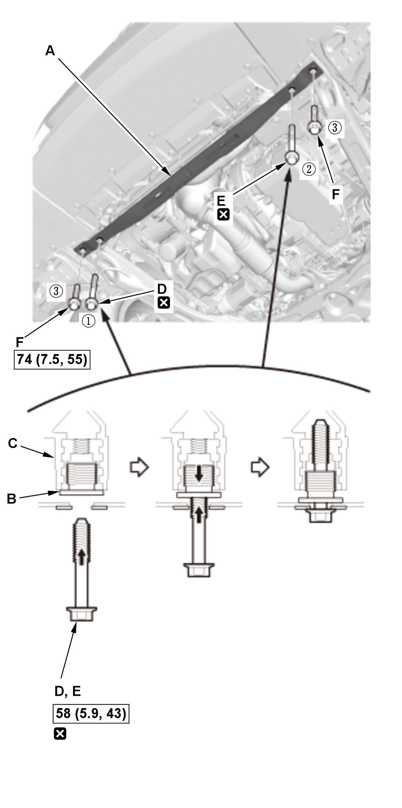
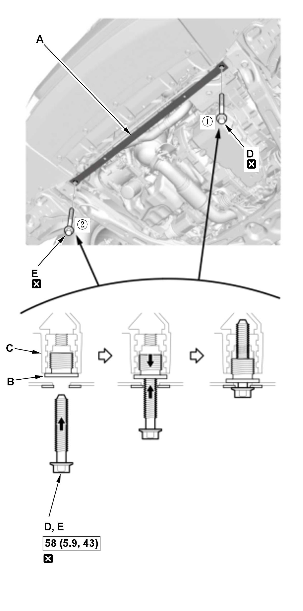

Removal and Installation
NOTE: How to read the torque specifications .
Front Brace (Front Side)
- Vehicle - Lift
- Front Brace (Front Side) - Remove
Front Brace A Front Brace B
1. Front brace A: Remove the bolts (A). 2. Loosen the bolts (B) until they engage the inside threads of the collar bolts (C). The thread lock on the bolts makes the bolts and the collar bolts turn together.
3. Continue to loosen the bolts to turn the collar bolts into the fixed space adjusters (D). This creates a gap (E) between the collar bolts and the body.
4. Remove the bolts B, then remove the front brace (F).
- All Removed Parts - Install

Courtesy of HONDA, U.S.A., INC.
Courtesy of HONDA, U.S.A., INC.1. Install the parts in the reverse order of removal.
NOTE:- Before installing the front brace (A), be sure the collar bolt (B) can be screwed/unscrewed lightly by hand, and then screw them into the space adjuster (C) fully by hand. Do not tighten them with any tools.
- Before installing the front brace, screw the special bolt into the collar bolts, and check that they turn together. If they do not turn together, replace the bolts.
- After setting the front brace in the body, install all of the mounting bolts but do not tighten them. First tighten the bolt (D). Next, tighten the bolt (E). Then tighten the bolts (F) (front brace A). As you tighten the bolts, the collar bolts screw out of the space adjuster until they contact the body. Continue tightening the bolts to the specified torque.
Front Brace (Rear Side) (For Some Models)
- Vehicle - Lift
- Front Brace (Rear Side) - Remove
- All Removed Parts - Install
1. Install the parts in the reverse order of removal.